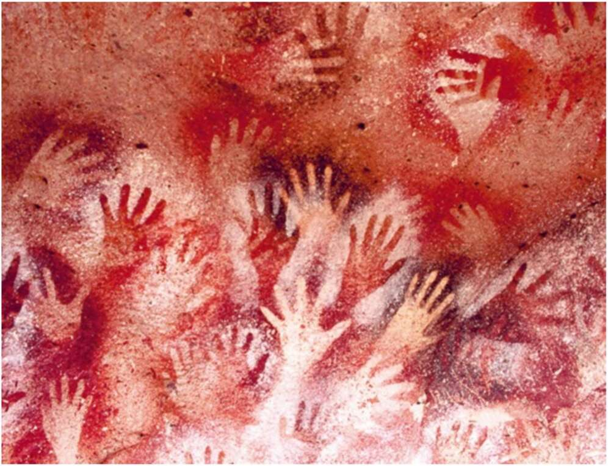

unlikely that a few dozen members of a single band could have produced so many grave goods by themselves. 9. Hunter-gatherers made these handprints about 9,000 years ago in the ‘Hands Cave’, in Argentina. It looks as if these long-dead hands are reaching towards us from within the rock. This is one of the most moving relics of the ancient forager world — but nobody knows what it means. Archaeologists then discovered an even more interesting tomb. It contained two skeletons, buried head to head. One belonged to a boy aged about twelve or thirteen, and the other to a girl of about nine or ten. The boy was covered with 5,000 ivory beads. He wore a fox-tooth hat and a belt with 250 fox teeth (at least sixty foxes had to have their teeth pulled to get that many). The girl was adorned with 5,250 ivory beads. Both children were surrounded by statuettes and various ivory objects. A skilled craftsman (or craftswoman) probably needed about forty-five minutes to prepare a single ivory bead. In other words, fashioning the 10,000 ivory beads that covered the two children, not to
